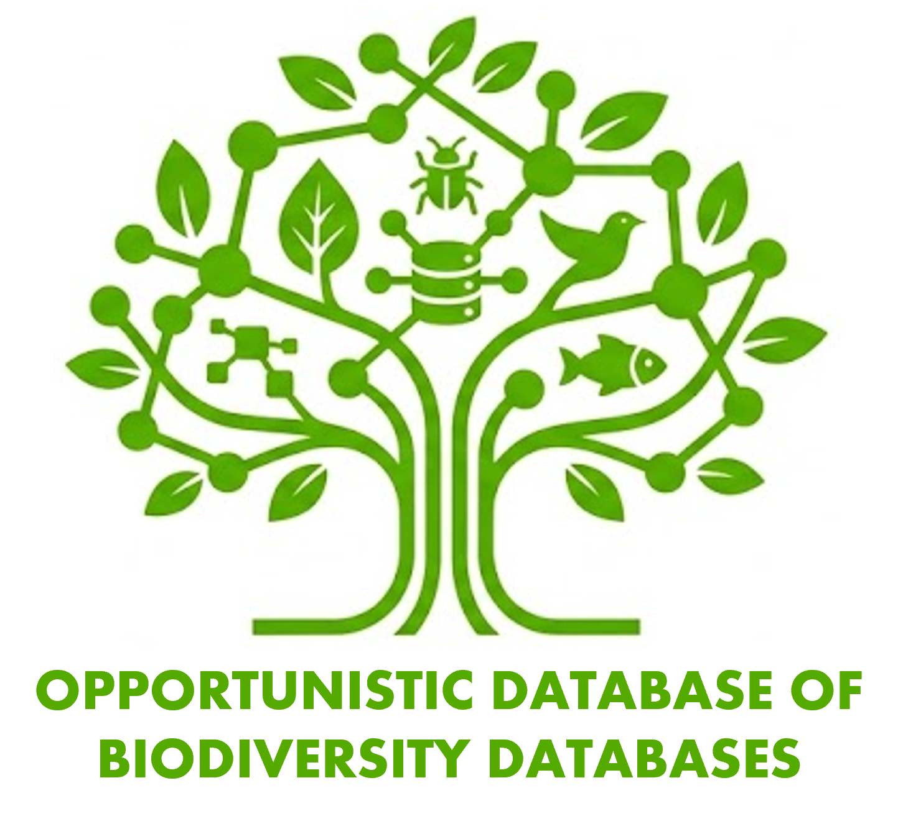
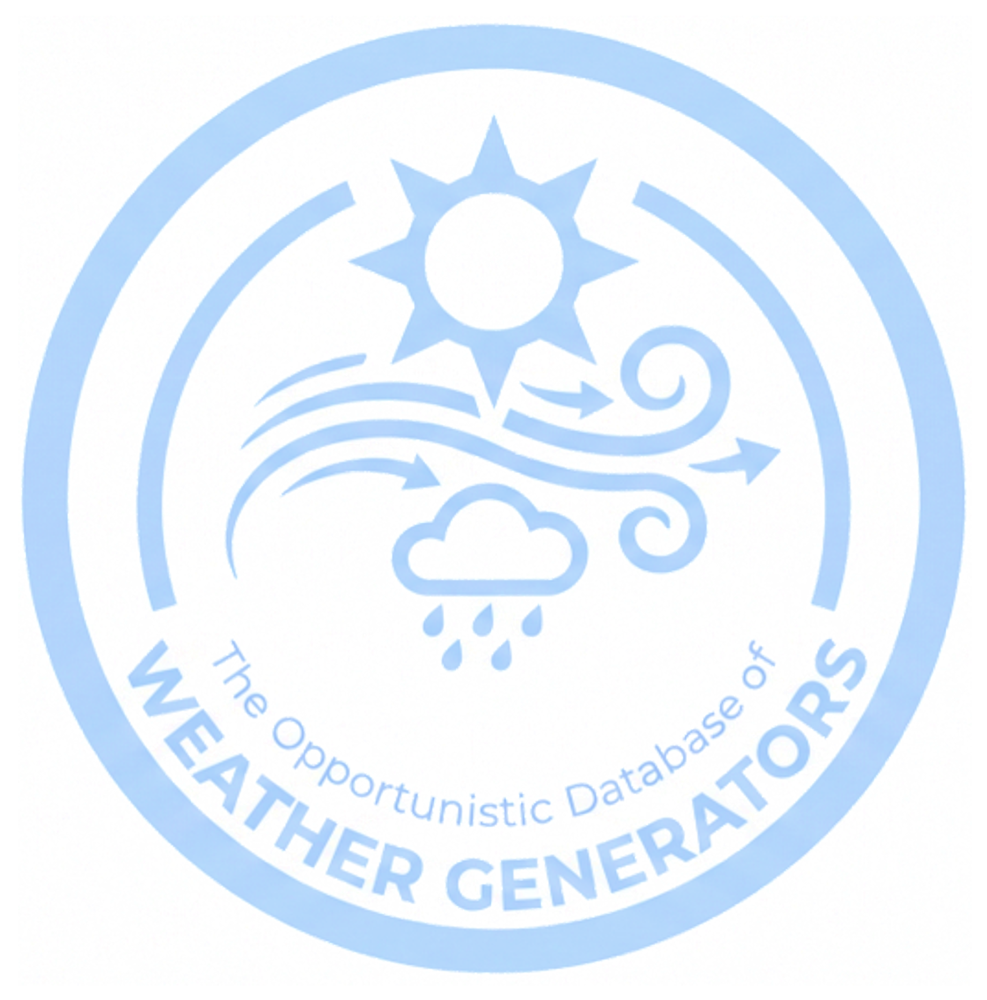
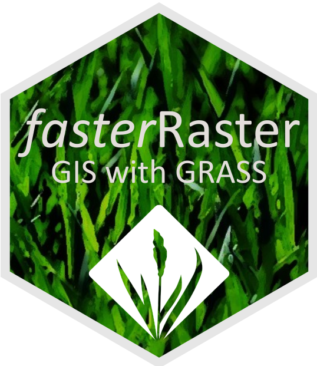
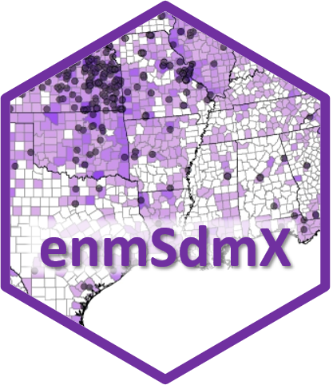
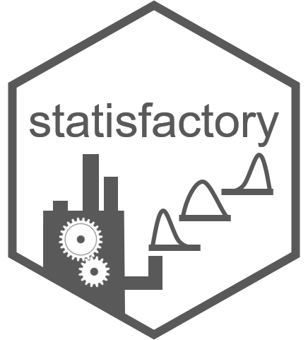
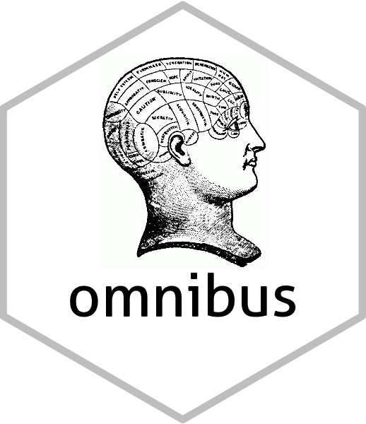

Databases, SDMing, Software, and Unsolicited Advice
Databases
We maintain and regularly update the following databases. Neither is an attempt at a systematic survey of databases–thus the “opportunistic” aspect.

The Opportunistic Database of Biodiversity Databases
An attempt to catalogue the diversity of biodiversity databases, currently with ~400 entries. Looking for specimen databases? Animal tracking data? Traits? Biotic interactions? Range maps? Phylogenies? Images and video? It’s all here!

The Opportunistic Database of Weather Generators
A running list of stochastic weather generators. New but growing!
SDMing
Four-or-so tools I recommend for how to learn to do species distribution modeling:
Best Practices in Species Distribution Modeling Workshop: The product of 7 in-person workshops held at international meetings and universities.
Download the files, unzip them, open the file therein entitled “00_getting_started.docx”, and get started!
Wallace 2: This is a point-and-click, user-friendly software package that runs through R that streamlines the modeling process, teaches you how to model and provides references where needed, and even writes the R code in the background so you can study and modify it.
The Habitat Suitability and Distribution Models: With Applications in R book by Guisan, Thuiller, and Zimmerman and Species Habitat Associations book (free online) by Matthiopoulos, Fieberg, and Aarts. The former is more of a how-to with a focus on SDM theory, the latter better with the statistical part of theory.
ENM2020: A series of free videos on SDMing from some of the world’s experts (a short description is here).
Software

Package fasterRaster, available on CRAN for R, is a GIS powerhouse for large-in-memory/large-on-disk rasters. Using GRASS GIS as a backend, fasterRaster emulates nearly all of the functions available in terra with the same name and usually the same arguments. For moderately-sized rasters or smaller, terra will nearly always be faster. But when it’s not, there’s always fasterRaster! Functions exist for:
- Focal, zonal, multi-layer, distance, cropping, resampling, projecting, buffering, applying PCA, de-noising, merging, sampling, hydrology and topography, and much more!
- Creating the 19 BIOCLIM rasters, plus an extended set of BIOCLIMs
- Calculation of landscape fragmentation indices
- Identification of landscape geomorphons
- And much more!


Package statisfactory, available on CRAN for R, contains a handful of useful statistical procedures, with functions for:
- Aligned rank transform (useful for using rank data in ANOVAs)
- 2-dimensional histograms
- Histograms with overlapping bins
- Making all possible formulae from a set of predictors
- And more!

Package omnibus, available on CRAN for R, contains handfuls of handy helper functions!
- Display the corners of a large data frame or matrix (top left, top right, etc.;
corner()) - Conversion factors for unit conversions (e.g., feet to meters;
convertUnits()) - Find values not in a vector (
%notin%) - Recursive unlisting of lists (
unlistRecursive()) - Handling equalities with
NAs (%<=na%,%>=na%, etc.) - Easily add leading zeros or other characters to a string (
prefix()) - And more!